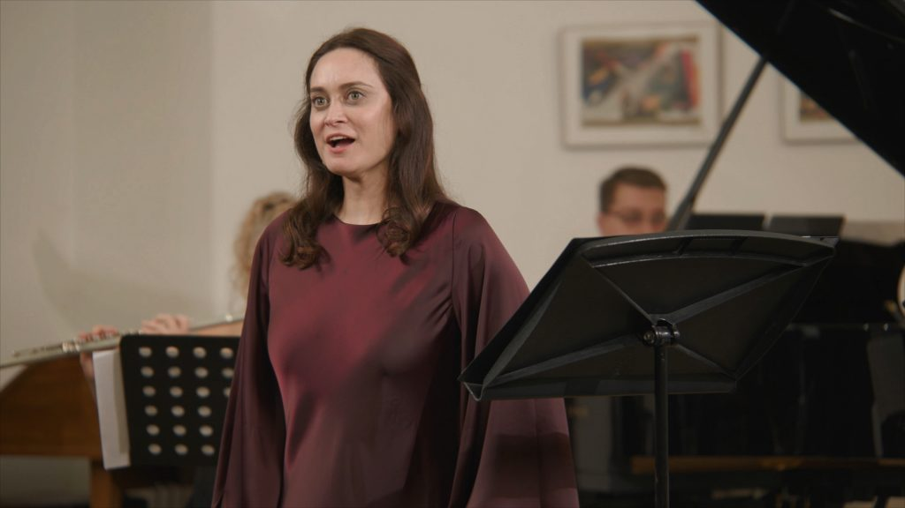
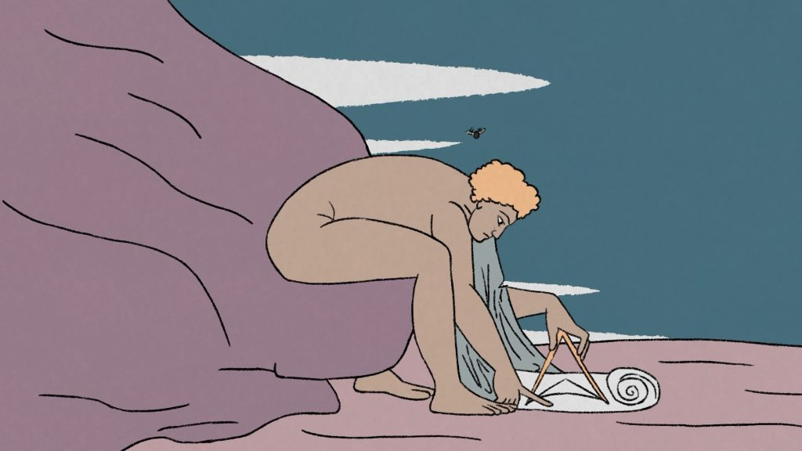

Fragments of Experience
A celebration of William Blake the poet, artist and proto-environmentalist through music and film.
Original music by Mark Bowler performed by soprano Marianna Suri with a stellar cast of musicians under the baton of Olivia Clarke.
A Positive Note film featuring cutting-edge AI animation by Mark Bowler alongside 2D animation by Harrison Fleming, Blake's own imagery, and live performance footage.
Watch the Film
Trailers
The Creative Team
About the Project
Inspired by William Blake's Songs of Experience, Fragments of Experience is a short film with original music and cutting edge AI animation by Mark Bowler alongside 2D animation by Harrison Fleming, Blake's own imagery and live performance footage.
The project is centred around Blake's poems The Fly, The Sick Rose and The Voice of the Ancient Bard with excerpts from Introduction to Songs of Experience and Earth's Answer, carefully woven to create a strong ecological metanarrative — Blake's warning cry to us across the centuries.
The Fly challenges us to question our relationship with nature, The Sick Rose presents themes of decay and corruption, and finally we are called to action in The Voice of the Ancient Bard. Mark composed original music for Fragments of Experience for a soprano and a five-piece chamber ensemble, later adding digitally manipulated music coupled with a contemporary delivery of Blake's poetry by British-Nigerian actor Abayomi Oniyide.

Drawing from William Blake's proto-environmentalism, work on Fragments of Experience began during the pandemic and the consequent lockdowns. Created as a work of reflection on the human condition, our relationship with nature and a need for radical change, it draws inspiration from Blake's unrelenting belief in the power of nature and calls us to observe, reflect and act against the existential threats humanity currently faces.
Marianna Suri and Mark Bowler began discussing the creation of a William Blake song cycle in 2018. After a three-year hiatus the idea was revisited in 2021. Blake's Songs of Experience rang particularly true through the scope of the pandemic. Production company Positive Note with director Dan Norman were recruited in 2021. In early 2022 the project received funding from Arts Council England.
A research and development period took place in Oxford in April 2022 and after a compositional phase the music was recorded in July 2022 with a film crew. Animator Harrison Fleming joined the team in December 2022. In early 2023, AI tools became available that have since revolutionised the world of digital animation. Mark embraced this technology and has brought his cutting-edge promptography skills to the film.

Fragments of Experience had its premiere on YouTube on Friday 10th November 2023. The film had been watched over one thousand times by the end of the weekend.
Musical forces: Pierrot ensemble with soprano, conducted by Olivia Clarke
Soprano – Marianna Suri
Flute – Helen Vidovich
Clarinet and bass clarinet – Raymond Brien
Piano – Panaretos Kyriatzidis
Violin – Chihiro Ono
Cello – Valerie Welbanks
Spoken voice – Abayomi Oniyide
Produced and directed by Dan Norman of Positive Note, in collaboration with Mark Bowler and One Glass Eye Records.
Fragments of Experience is supported by Arts Council England, The Maria Björnson Foundation, The Blake Society, Blakefest, and the Oxford International Song Festival.

© 2023 Positive Note & One Glass Eye Records
Mailing List
Subscribe to my (very occasional) mailing list: